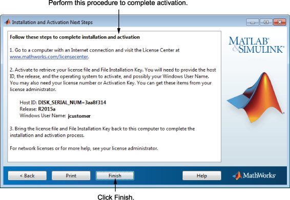

“安装并激活的后续步骤”对话框包含从 MathWorks® 网站上的许可证中心获取文件安装密钥所需的信息。这些信息包括：
主机 ID
版本号（例如 R2015a）
操作系统用户名（请注意用户名在激活时区分大小写。）

要获取文件安装密钥，请执行以下操作：
复制此对话框中显示的信息，然后点击“完成”退出安装程序。在 Windows 系统和 Linux 系统上，可以点击“打印”以打印相关信息。
转至具有 Internet 连接的计算机，在 MathWorks 网站上登录到您的帐户。
访问许可证中心并输入此对话框中的信息。MathWorks 使用此信息来生成与您的许可证对应的许可证文件和文件安装密钥。
返回您的计算机并重新运行安装程序。使用文件安装密钥和许可证文件，可以在不连接 Internet 的情况下安装和激活软件。